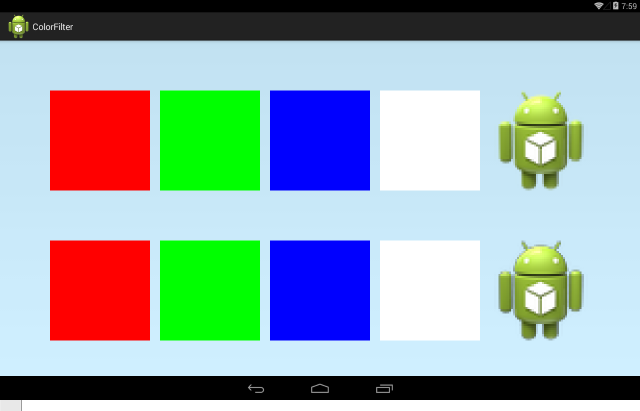
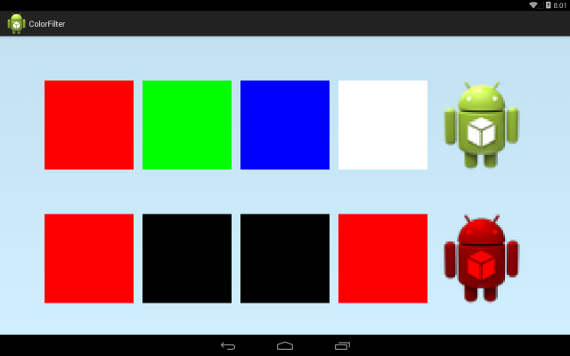
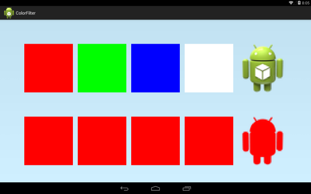
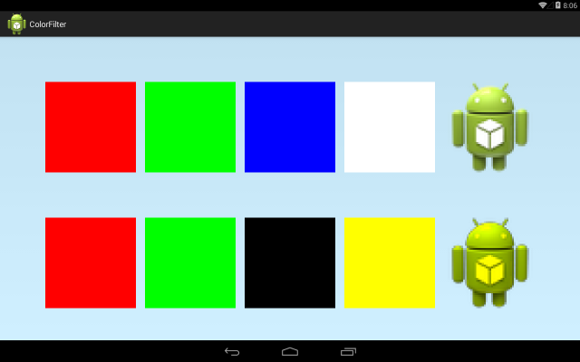
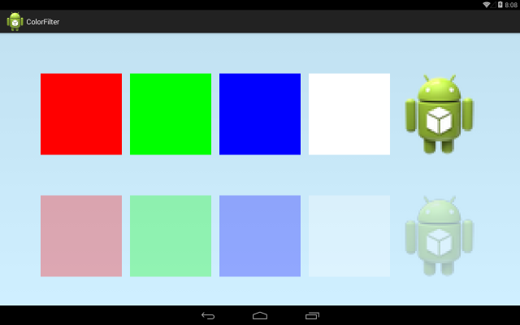
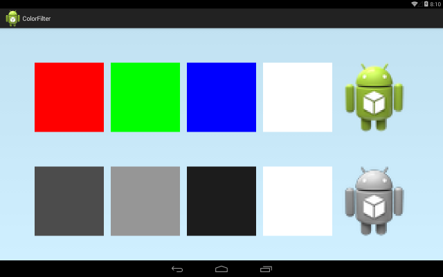
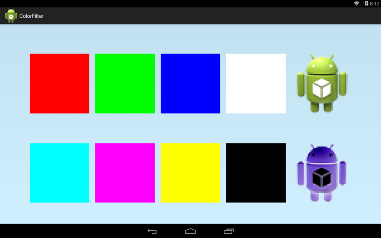
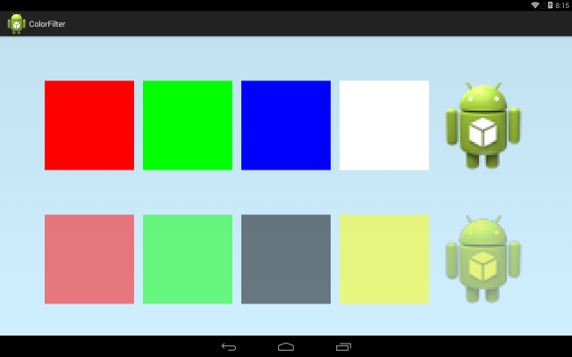
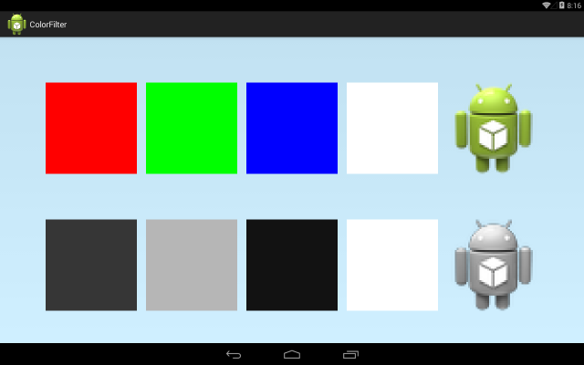
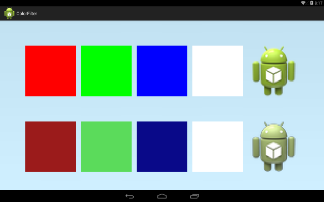

В этом уроке:
- меняем цвет кисти с помощью ColorFilter
Сначала немного разъяснений по поводу цвета. Думаю, все уже в курсе, что в Android цвет мы обычно получаем путем сочетания трех цветов – красного (Red), зеленого (Green) и синего (Blue). Зовется это RGB. К этому набору можно еще добавить уровень прозрачности (Alpha). Получится ARGB.
Значения этих компонентов мы указываем от 0 до 255. Например, фон экрана, который я использую во всех уроках образуется так (80, 102, 204, 255). Соответственно значения: прозрачность – 80, красный – 102, зеленый – 204, синий – 255.
Если мы все RGB компоненты установим равными 0, то получим черный цвет. Если же все будут 255, то получим белый цвет.
Частенько значения указываются не в десятичной форме, а в шестнадцатеричной. Т.е. от 00 до FF, вместо 0 и 255. В этом случае обычно пишут не ARGB, а AARRGGBB. Например, красный цвет: FFFF0000. Если разбивать на AARRGGBB компоненты, получим AA = FF, RR = FF, GG = 00, BB = 00.
Существуют int-константы для указания цвета. Например Color.RED. Как получить такую int-константу из ARGB компонентов? Есть методы Color.rgb и Color.argb, куда вы передаете RGB или ARGB компоненты, а метод вернет вам int-значение цвета.
А метод Color.parseColor позволит получить вам int-значение из шестнадцатеричной формы: #RRGGBB или #AARRGGBB.
Наследники ColorFilter позволяют нам оказывать влияние на цвет, используемый при рисовании объектов.
ColorMatrixColorFilter
Начнем с ColorMatrixColorFilter. Этот вид фильтра влияет на цвет, используя значения 4х5 матрицы, которую мы ему выдадим.
Алгоритм немного нетривиальный, если вы незнакомы с матрицами из алгебры.
Мы задаем матрицу такого вида
rR, rG, rB, rA, rT
gR, gG, gB, gA, gT
bR, bG, bB, bA, bT
aR, aG, aB, aA, aT
4 строки, в каждой по 5 значений.
И пусть у нас есть некий цвет ARGB, к которому будем фильтр применять. Фильтр возьмет текущие значение цвета и из них, используя матрицу, вычислит новые. Например, новое значение красного (Rn) он посчитает так:
Rn = R * rR + G * rG + B * rB + A * rA + rT
Т.е. значения исходного цвета (R,G,B,A) перемножаем на первые 4 значения (rR, rG, rB, rA) из первой строки матрицы и прибавляем пятое значение (rT) из этой же строки.
Разумеется, нам ничего такого писать не придется, фильтр сам все рассчитает. От нас требуется только матрицу ему предоставить. Здесь я просто показываю, как оно все внутри работает.
Новое значение зеленого (Gn) получается аналогично, используя исходные RGBA и вторую строку матрицы.
Gn = R * gR + G * gG + B * gB + A * gA + gT
Синий (Bn) и прозрачность (An) – третья и четвертая строки
Bn = R * bR + G * bG + B * bB + A * bA + bT
An = R * aR + G * aG + B * aB + A * aA + aT
Давайте рассмотрим это на примерах.
Создадим проект:
Project name: P1531_ColorFilter
Build Target: Android 4.0
Application name: ColorFilter
Package name: ru.startandroid.develop.p1531colorfilter
Create Activity: MainActivity
MainActivity.java:
package ru.startandroid.develop.p1531colorfilter;
import android.app.Activity;
import android.content.Context;
import android.graphics.Bitmap;
import android.graphics.BitmapFactory;
import android.graphics.Canvas;
import android.graphics.Color;
import android.graphics.ColorFilter;
import android.graphics.ColorMatrix;
import android.graphics.ColorMatrixColorFilter;
import android.graphics.Paint;
import android.graphics.Rect;
import android.os.Bundle;
import android.view.View;
public class MainActivity extends Activity {
@Override
protected void onCreate(Bundle savedInstanceState) {
super.onCreate(savedInstanceState);
setContentView(new DrawView(this));
}
class DrawView extends View {
Paint paint;
Bitmap bitmap;
Rect rect;
float[] cmData = new float[]{
1, 0, 0, 0, 0,
0, 1, 0, 0, 0,
0, 0, 1, 0, 0,
0, 0, 0, 1, 0};
ColorMatrix cm;
ColorFilter filter;
Bitmap icon;
public DrawView(Context context) {
super(context);
rect = new Rect(0,0,200,200);
paint = new Paint(Paint.ANTI_ALIAS_FLAG);
paint.setStyle(Paint.Style.FILL_AND_STROKE);
icon = BitmapFactory.decodeResource(context.getResources(), R.drawable.ic_launcher);
cm = new ColorMatrix(cmData);
filter = new ColorMatrixColorFilter(cm);
}
@Override
protected void onDraw(Canvas canvas) {
canvas.drawARGB(80, 102, 204, 255);
canvas.translate(100, 100);
drawObjects(canvas);
paint.setColorFilter(filter);
canvas.translate(0, 300);
drawObjects(canvas);
}
void drawObjects(Canvas canvas) {
canvas.save();
paint.setColor(Color.RED);
canvas.drawRect(rect, paint);
paint.setColor(Color.GREEN);
canvas.translate(220, 0);
canvas.drawRect(rect, paint);
paint.setColor(Color.BLUE);
canvas.translate(220, 0);
canvas.drawRect(rect, paint);
paint.setColor(Color.WHITE);
canvas.translate(220, 0);
canvas.drawRect(rect, paint);
canvas.translate(220, 0);
canvas.drawBitmap(icon, null, rect, paint);
canvas.restore();
}
}
}
cmData – массив float, сюда пишем значения для матрицы.
Переменная cm – это и есть матрица – ColorMatrix. Ей мы даем массив cmData.
Эту матрицу мы указываем при создании фильтра filter. Теперь у фильтра есть матрица и он знает какие преобразования цвета ему необходимо будет произвести.
В методе drawObjects рисуем 4 квадрата – красный, зеленый, синий, белый, и выводим андроид-иконку. На этих объектах мы будет тестировать изменения цвета. Используем кисть paint.
В onDraw рисуем объекты метолом drawObjects, затем для кисти paint применяем фильтр методом setColorFilter и снова выводим объекты. Т.к. при рисовании объектов используется кисть paint, то применение фильтра к кисти повлияет на цвета рисуемых фигур.
Сейчас наша матрица выглядит следующим образом
1, 0, 0, 0, 0,
0, 1, 0, 0, 0,
0, 0, 1, 0, 0,
0, 0, 0, 1, 0
Если мы возьмем RGBA и применим матрицу, получим
Rn = R * 1 + G * 0 + B * 0 + A * 0 + 0 = R
Gn = R * 0 + G * 1 + B * 0 + A * 0 + 0 = G
Bn = R *0 + G * 0 + B * 1 + A * 0 + 0 = B
An = R * 0 + G * 0 + B * 0 + A * 1 + 0 = A
Новые значения равны исходным. Т.е. матрица настроена так, что RGBA значения любого цвета вообще не изменятся. Убедимся в этом. Запускаем приложение
Результат:

Сверху (оригинал) и снизу (после применения фильтра) цвета одинаковы. Фильтр хоть и применился, но ничего не изменил в значениях цветов.
Поменяем матрицу:
float[] cmData = new float[]{
1, 0, 0, 0, 0,
0, 0, 0, 0, 0,
0, 0, 0, 0, 0,
0, 0, 0, 1, 0};
Результат:

Теперь явно что-то поменялось. Давайте смотреть, что именно
Был красный цвет c RGBA = (255,0,0,255). Применим фильтр:
Rn = 255 * 1 + 0 * 0 + 0 * 0 + 255 * 0 + 0 = 255
Gn = 255 * 0 + 0 * 0 + 0 * 0 + 255 * 0 + 0 = 0
Bn = 255 * 0 + 0 * 0 + 0 * 0 + 255 * 0 + 0 = 0
An = 255 * 0 + 0 * 0 + 0 * 0 + 255 * 1 + 0 = 255
Новые RGBA значения получились такими (255,0,0,255). Т.е. для красного цвета ничего не поменялось. Это видно и на скриншоте, красный квадрат на месте.
А вот зеленый стал черным, смотрим почему
RGBA зеленого = (0,255,0,255). Применяем фильтр.
Rn = 0 * 1 + 255 * 0 + 0 * 0 + 255 * 0 + 0 = 0
Gn = 0 * 0 + 255 * 0 + 0 * 0 + 255 * 0 + 0 = 0
Bn = 0 * 0 + 255 * 0 + 0 * 0 + 255 * 0 + 0 = 0
An = 0 * 0 + 255 * 0 + 0 * 0 + 255 * 1 + 0 = 255
Новые RGBA значения зеленого = (0,0,0,255), а это черный. Тем же путем и синий (0,0,255,255) стал черным.
А белый (255,255,255,255) после преобразования
Rn = 255 * 1 + 255 * 0 + 255 * 0 + 255 * 0 + 0 = 255
Gn = 255 * 0 + 255 * 0 + 255 * 0 + 255 * 0 + 0 = 0
Bn = 255 * 0 + 255 * 0 + 255 * 0 + 255 * 0 + 0 = 0
An = 255 * 0 + 255 * 0 + 255 * 0 + 255 * 1 + 0 = 255
стал таким (255,0,0,255) – т.е. красным. Скриншот это подтверждает.
Т.е. применив фильтр, мы для всех цветов «обнулили» значения синего (B) и зеленого (G). Оставили только красную (R) составляющую. Это видно и на андроид-иконке.
Но тут важно понимать одну вещь. Мы не выкрасили все в красный цвет. Мы полностью убрали зеленый и синий, а красный оставили в том значении, в каком он был.
Т.е. в красном квадрате значение красного было 255. Таким и осталось.
В синем и зеленом квадратах значение красного было 0. Таким и осталось.
В андроид-иконке видно, что красный неоднородный, где-то светлее, где-то темнее. Т.е. изначально иконка была нарисована разными оттенками, в которых были использованы различные RGB комбинации. А мы в этих комбинациях убрали G и B, оставили только R. Т.е. где R был, например 50, остался 50. Где был 150 – остался 150. А G и B теперь везде = 0.
Давайте настроим матрицу так, чтобы красный везде стал максимальным. Независимо от первоначального значения. А синий и зеленый снова будем обнулять.
float[] cmData = new float[]{
0, 0, 0, 0, 255,
0, 0, 0, 0, 0,
0, 0, 0, 0, 0,
0, 0, 0, 1, 0};
Мы убрали коэффициент 1 из первого числа первой строки. Т.е. теперь новое значение R уже не будет равно старое значение R умноженное на 1. Теперь оно будет умножаться на 0. Но последнее число первой строки = 255. Оно будет прибавлено к нулю и мы получим полный красный цвет на замену первоначальным оттенкам красного.
Синий и зеленый также станут красными. Т.к. G и B значения мы в них обнулим, а R будет равен 255, т.е. (255,0,0,255).
Результат

Теперь изменим матрицу так, чтобы обнулялся только синий. Красный и зеленый компоненты останутся неизменны.
float[] cmData = new float[]{
1, 0, 0, 0, 0,
0, 1, 0, 0, 0,
0, 0, 0, 0, 0,
0, 0, 0, 1, 0};
Результат

Убрав из синего цвета (0,0,255,255) синюю компоненту мы получили черный (0,0,0,255).
А убрав из белого цвета (255,255,255,255) синюю компоненту мы получили желтый (255,255,0,255).
Т.е.
красный + зеленый + синий = белый
белый – синий = красный + зеленый = желтый.
Мы меняли компоненты цветов (RGB), теперь давайте попробуем поменять прозрачность (A). Напомню, что если A = 255, то цвет абсолютно непрозрачен. Если A = 0, то цвет совсем не виден.
float[] cmData = new float[]{
1, 0, 0, 0, 0,
0, 1, 0, 0, 0,
0, 0, 1, 0, 0,
0, 0, 0, 0.3f, 0};
Мы поставили коэффициент 0.3 для вычисления нового значения прозрачности. Т.е. An = A * 0.3. Т.е. все цвета станут прозрачными на 30% от текущего уровня.
Результат

Еще пара примеров матриц, которые я нашел в инете:
Черно-белая
float[] cmData = new float[]{
0.3f, 0.59f, 0.11f, 0, 0,
0.3f, 0.59f, 0.11f, 0, 0,
0.3f, 0.59f, 0.11f, 0, 0,
0, 0, 0, 1, 0,};
Результат:

Инвертирование цветов
float[] cmData = new float[]{
-1, 0, 0, 0, 255,
0, -1, 0, 0, 255,
0, 0, -1, 0, 255,
0, 0, 0, 1, 0,};
Результат:

У матрицы также есть несколько методов, которые позволяют настраивать ее значения.
setScale – позволяет нам указать на какие значения необходимо умножать RGBA значения цвета.
Перепишем конструктор DrawView:
public DrawView(Context context) {
super(context);
rect = new Rect(0,0,200,200);
paint = new Paint(Paint.ANTI_ALIAS_FLAG);
paint.setStyle(Paint.Style.FILL_AND_STROKE);
icon = BitmapFactory.decodeResource(context.getResources(), R.drawable.ic_launcher);
cm = new ColorMatrix();
cm.setScale(1, 1, 0, 0.5f);
filter = new ColorMatrixColorFilter(cm);
}
При создании ColorMatrix мы не использовали массив, и матрица создалась такой, какая была у нас в самом первом примере, т.е. ничего не меняющая. Но сейчас мы ее поднастроим.
Используем метод setScale. Его входящие параметры – это коэффициенты соответственно для R, G, B и A компонентов.
Т.е. значения 1, 1, 0, 0.5f настроят матрицу так, что
Rn = R * 1;
Gn = G * 1;
Bn = B * 0;
An = A * 0.5f
Т.е. красный и зеленый останутся прежними, синий обнулится, а прозрачность станет в 0.5 от старого значения.
Результат

Похоже на то, что было в четвертом примере, только прозрачность другая.
Также есть интересный метод setSaturation. Отвечает за насыщенность цветов. Принимает на вход значения от 0 до 1.
Если задать 0, то получим черно-белую картинку.

Если например 0.5f, то будет половина насыщенности

По умолчанию значение этого метода = 1, все цвета при этом будут такими, какими должны.
Есть еще метод setRotate. Это поворот относительно одного из RGB компонентов на указанное кол-во градусов. Я, честно говоря, его не понимаю и объяснить его смысл не могу. Возможно, он будет понятен тем, кто активно использует графические редакторы и работает с цветом.
LightingColorFilter
LightingColorFilter принимает на вход два цвета
mul – RGB-компоненты этого цвета будут умножены на соответствующие RGB-компоненты исходного цвета. Причем, компоненты mul надо рассматривать, как числа в диапазоне от 0 до 1. Т.е. если в mul компонент, например, R равен 255, то R-компонент исходного цвета останется без изменений (умножение на 1). Если в mul компонент R = 0, то R-компонент обнулится (умножение на 0). Если в mul компонент R = 127, то R-компонент уменьшится в два раза (умножение на 0.5)
add - RGB-компоненты этого цвета будут прибавлены к соответствующим RGB-компонентам исходного цвета, а результат урезан до 255.
В общем, должен сказать, что все эти игры с цветом для меня темный лес. Я не очень понимаю, какую практическую пользу можно вынести их этих механизмов. Но теперь мы имеем понятие как они работают и как ими пользоваться. Возможно, когда-нибудь это пригодится при работе с графикой.
Есть еще третий ColorFilter класс: PorterDuffColorFilter. О нем поговорим в одном из следующих уроков.